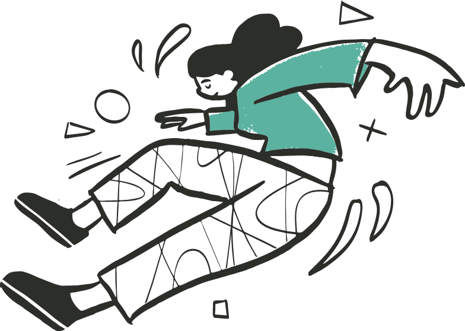
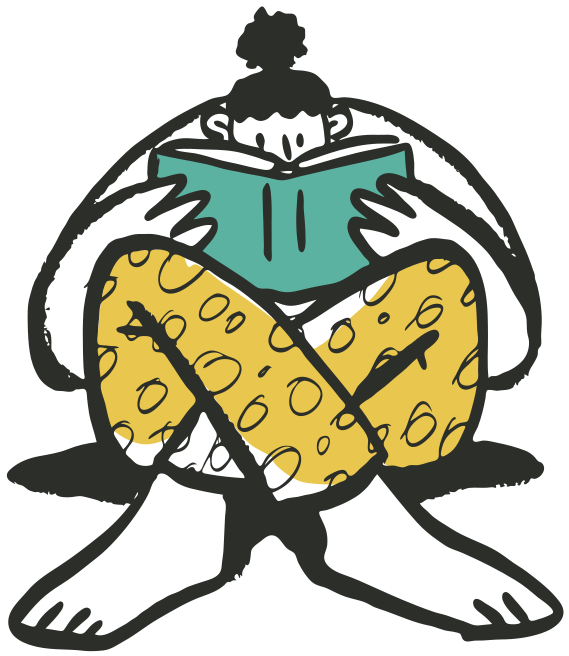
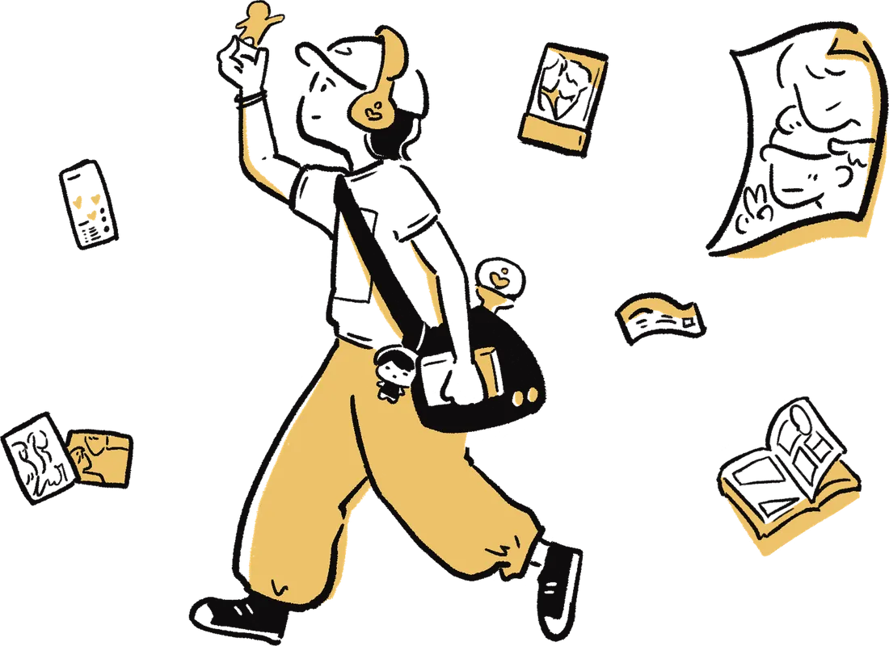

電子報 01
《伶魂洞察》
將知識與想法以更為柔軟的形式，用文字進行編織。比起打造知識的生硬框架，我更希望增加它的親膚性。
訂閱連結即將開放Hi，我是 Mei，我是一位獨立研究者／體驗策略顧問
我持續透過觀察、研究，理解人們重視什麼、如何行動。
協助團隊在複雜模糊的探索階段，找到真正值得投入的方向。

我們常需要在有限的時間裡，快速理解市場與受眾。但當我們太快把人壓縮成標籤時，那些真正影響行為的因素，反而無法被看見。
我目前關心以下議題：
購買、決策、留下、離開
人們真正的想法，不一定會說出來，但會藏在他的行為當中
產品體驗、文化內容
如何讓人喜歡、認同，甚至進一步投入與付費
思考、學習、判斷
當答案越來越容易透過 AI 取得，什麼會留在我們的腦中
在不同產業當中， 我看見共同的人性需求

「原來顧客真的跟我們想像的不一樣，沒有訪談還真的不知道」合作夥伴常這樣說。
研究中，最讓我上癮的，就是找到那個顛覆原本想像的翻轉，再把這些意料之外的發現，整理成下一步的策略方向。
從 886 位粉絲的回答，理解一份喜歡如何形成情感、行動與消費。

閱讀完整報告另開分頁平台認為付費率低是因為「免費能看的太多」，找我來的時候，想討論的其實是免費章節要縮短幾話。
訪談 14 位一年內有付費紀錄的讀者，請他們拿自己的手機，把「最近一次付錢」那個晚上重演一遍——當時在哪、剛剛做完什麼、付完之後第一件事是什麼。
他們買的不是「接下來的劇情」。付費前一刻最常出現的情緒不是好奇，是怕自己被留在討論之外——錢買的是「跟作者和其他讀者站在同一個時間點」的位置。
免費章節沒有縮短。改成把留言區、作者更新與追進度的提示移到付費動線前面，讓「還沒付費的人也看得到大家正在聊什麼」。訂閱制的命名從「解鎖」換成「支持」，三個月後續訂率的變化成為下一輪研究的題目。
「我不是急著看結局，我是不想等到大家都討論完了，我才一個人在後面追。」
受訪者・二十多歲・每月固定付費的讀者
三個不同產業的客戶問了同一個問題：定價要壓到多低才有競爭力。他們都相信市場只看 CP 值。
訪談裡完全不問價格。改成請受訪者回想兩件事：最近一次覺得「這錢花得很值得」，和最近一次覺得「我被坑了」，然後一路往回追到做決定的前一天。
「值得」不是價格對品質的比值。三個產業指向同一件事：這筆錢有沒有幫我把不確定收掉。願意付高價的時刻，幾乎都是「我終於知道接下來會發生什麼」的時刻。
高價方案不再比誰的內容多。改成把「你會知道什麼時候結束、結果大概長什麼樣、中間出問題找誰」寫進方案本身，變成可以被寫在頁面上的承諾。低價方案反而被重新定義成「試試看」，而不是「省錢版」。
「貴不貴我其實不太會算，我算的是我還要再擔心多久。」
受訪者・四十多歲・自費療程使用者
續留率連續兩季下滑，內部的共識是「對手的贈品給得比我們兇」，正在評估要不要加碼。
先從資料切出三群人，刻意不去訪已經離開的那一群，而是訪「還在、但已經不再使用」的那一群——他們最能說清楚維繫關係的東西什麼時候斷掉的。
留下來的人講不出自己拿過什麼贈品。真正被反覆提起的是「我在這裡是不是一個被記得的人」——被記得的人會留下並且變得更活躍，沒被記得的人只是懶得搬家。
贈品預算沒有加碼。權益改成累進的「關係進度」，讓使用者看得到自己一路走到哪裡；同時把客服與行銷共用的招呼語拆開，因為那句「親愛的貴賓」正好是受訪者最常拿出來笑的一句話。
「換一家也要重新來過，麻煩。但我留著也沒什麼感覺，就……放著。」
受訪者・三十多歲・使用滿五年的會員
研究、教學，以及公開分享。
2024 — Present
研究與策略顧問、自主研究、教學與研究陪跑。
2019 — 2024
曾任體驗顧問公司研究副總監，參與並帶領跨產業研究與策略專案。
除了研究與顧問，我也透過演講、工作坊與教學，把研究過程中累積的方法與觀察整理出來，和不同領域的人一起交流。
研究問題、訪談技巧、質性研究與洞察形成。
AI 如何參與研究、資料整理與分析，同時保留身為人類的判斷。
如何讓 Findings 不只停在報告，而是進入產品、策略與決策。
透過演講與課程，分享這些主題的方法與實務。
線上講座
實體課程
講座分享
講座分享
每個團隊、每個問題適合的方式都不太一樣。有時候，我們需要重新回到使用者身上理解需求；有時候，其實團隊已經有很多資料，只是還沒有把散落一地的線索，重新組合在一起。
當你需要真實理解一群人，不想用推測，或純粹用 AI 推敲需求。
從研究問題、研究設計、訪談，到洞察與策略建議。
你們手上有很多資訊，但需要有人把它們拼起來。
協助團隊整理既有研究、數據、客戶聲音與內部觀點，找出真正的問題與下一步。
團隊有研究能力需求，但不需要一位全職的研究者。
以階段性顧問、研究夥伴的方式加入團隊。
團隊想要自主學習研究與觀察能力、如何與 AI 共同協作。
以講座、互動式工作坊方式，帶領學習活動。
如果不確定什麼適合，可以先聊聊再一起決定。 與我聊聊
以人為核心，爬梳產業觀察、文化內容、自身反思。記錄那些我覺得重要的事。
觀察分析
你今天被 Duolingo 鳥情勒了嗎？
觀察分析
我也收集過當年的 Hello Kitty 超商磁鐵
專業實戰
與團隊夥伴協作溝通，共同將使用者研究轉化為實際產品策略
粉絲文化現場
關於重視體驗的我，如何在粉絲圈中發起包場行動
其餘的文章，都收在我的 Medium。 看全部文章